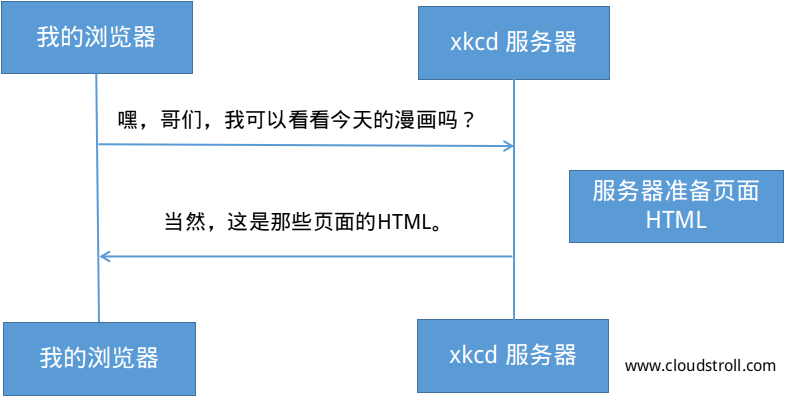

HTTP(对于极客来讲是：超文本传输协议）是一个可以支持两台机器互通的一种文本语言。举个例子，当我们查找XKCD最新的漫画时，其流程大概如下;

虽然实际使用的用于会有些正式，但依然简单的要命。HTTP就是用来描述这种基于文本的语言的术语。不管你如何在web上开发，服务器的目标总是理解简单的文本请求并返回简单的文本响应。
Symfony是建立在HTTP现实的基础上。无论你是否意识到，HTTP是你每天都在使用的东西。在Symfony中，你将学会如何掌握它。